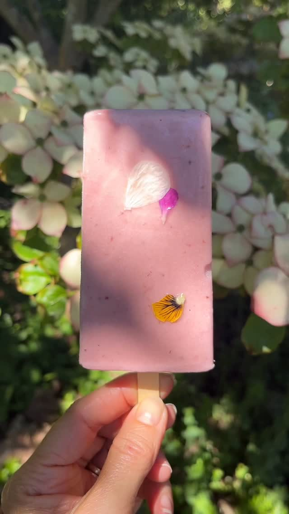

Small-batch ice cream made from scratch with seasonal ingredients — each one traceable to a specific farm, garden, or person on Vancouver Island.
From Oldfield Kiwi Farm in Central Saanich — the first and oldest kiwi growers on Vancouver Island. Most people don't know kiwis grow here. They do, and they're delicious.
Organic, from Longview Farms. Roasted slow and folded in — a true taste of the season.
From Rockrose Farm. Grown for beauty, pollinators, and pure joy — pressed onto sherbet bars that taste like a summer garden.
Hand-picked in fall from the garden at Roundhouse Midwives. Turned into jam, swirled into vanilla bean. You won't find that anywhere else.
As seen on CHEK News Around Town.



Flavours rotate with the seasons. See what's in right now on Instagram @kidsistericecream ↗
"This fulfilled all my cinnamon heart fantasies!!"
"So so good 🍓🍓"
"We watched you on CHEK News! Looked great."
Noon–6pm in shoulder season.
Extended hours in summer.
Check @kidsistericecream for current schedule.
Flavours change with the harvest. @kidsistericecream has the latest.